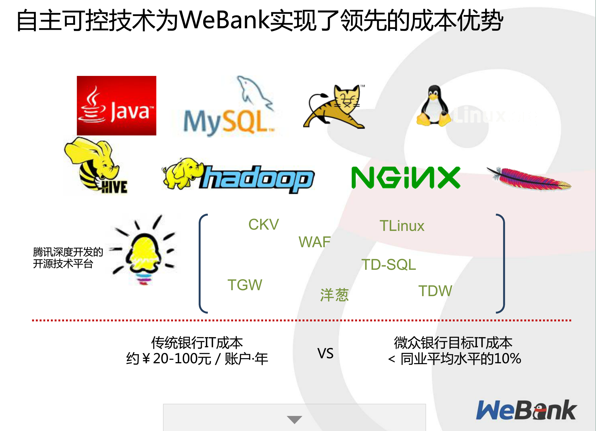

Your browser doesn't support the features required by impress.js, so you are presented with a simplified version of this presentation.
For the best experience please use the latest Chrome, Safari or Firefox browser.
State of The Art in Fintech
The ambitious title is to lure you in
- What is it
- Why is it important
- What happened in the last 18 months
- What can help us
Purposely bold statments to provoke discussions
- 20% business
- 50% technical
- 30% nonsense
What is Fintech?
Wikipedia: Financial technology, also known as FinTech, is an economic industry composed of companies that use technology to make financial services more efficient.
Financial technology companies are generally startups founded with the purpose of disrupting incumbent financial systems and corporations that rely less on software.
Seems too limiting: how about financial solution/service providers?
What is Fintech?
Chris Skinner:
“Fintech is the R&D function of financial services in the digital age….less to do with technology more to do with business model reinvention and customer centric design. Fintech can be categorised as:
- Traditional fintech as ‘facilitators’
- Emergent fintech as ‘disruptors’ "
But really, its a new type. Online Retailer vs E-commerce
The following areas to watch
Ben Goldsmith said those 5 to watch in the beginning of 2015:
- biggest: b2b software sold to financial institution
- Alternative finance
- payments
- wealth management
- blockchain technology (bitcoin)
Why is it important?
Big growing markets:
2014 to 2015 the Global investment in Fintech has trippled from 4 Billion to 12 Billion;
Annual gobal market to reach 46 billion;
Goldman Sachs forcasts that $4.7 trillion in revenue for traditional financial services is potentially at risk of being displaced globally by new technology-enabled entrants;
Does affect people's lives
What happened 2015:
- New Banks created
- Traditional banks cost saving
- Fintech & Goverment Strategies
- Technologies that stoop out
Digibanks or softbanks from the ground up
- Jan 2015, WeBank.
- June 2015, Alibaba launches MYBank.
- Nov 2015, Another Online Bank Is Starting Up In China As Baidu Partners With CITIC.
- Nov 2015, UK Mobile-Only Atom Bank Picks Up $128M Led By BBVA, Owner Of Simple In The U.S
- Nov 2015, Mondo Bank made their Internet banking API public.
Why do new banks matter?
- Cost
- Business Agility
- cheaper, faster and cooler
Hows the traditional banks doing?
- March: Wells Fargo announced 1000 jobs to go
- May, JPMorgan Chase 5000 to go next year (will relay more on technology )
- June, HSBC, 50,000 jobs cut
- July: Bank of America 3000
- Barclays: 30,000 jobs to go in two years
- Sep: Deutsche Bank Plans to Cut About 25% of Jobs, 23,000 jobs
- UBS, Credit Suisse has cut 1,237 jobs;1,682 in total for all Swiss banks.
- Dec: Standard Chartered plans to cut 15,000 jobs by 2018.
- OZ No exception: Nov, The four-largest lenders and Macquarie Group cut a combined 1475 jobs
Fintech and Goverment Strategies
Two countries (China and UK) have decided to make Fintech investment national strategies.
- March 2015 “Internet Plus" in China
- July 2015 Fintech UK
Why those goverment strategy matters
- Regulation (p2p, insurance)
- Funding
- Market
- Talent
2015 Dec: KPMG Fintech 100 report
- Funding boom: more than $10B
- Fintech is now truly a global sector
- China fintech leads the worl
- Australia is punching above its weight
- Payments is most at risk of disruption
- Insurance finds its fintech footing
- Shift from disruptors to enablers
Other worthnoting tech news
- 11.11 Alibaba’s single day sale record hit $14.3 billion. Mobile & Loan.
- Dec, Uber reached 1billionth ride.
- Dec, Atlasssian,5.8 billion at the last IPO of 2015.
How to be a disruptor?
What technology/thinkings can get us there?
Google, Amazon, Facebook ,Netflix ...
Be open
- Use open source
- Leverage through community
- Be open and extensible -- API and SPI
- Empower your users
- Avoid undifferentiated heavy lifting
Atlassian, Salesforce, Google, Mondo Bank, IFFT.
The webank story

IT Cost per customer: less than 10%
Surely we must use it. Surely it is a must have.
Or is it?
- Staff skills
- Solving a specific problem, like LMAX
- Business Model (outsourcing?)
Cloud Native
- Extremely high availability, scalability, cost effective
- No superficial cloud
- What cloud offers does not mean what your software would offer
- 12 factor apps
Surely we must use it. Surely it is a must have.
Or is it?
Throw away code
Clients restrictions.
Micro-services
- Monolithic vs Micro-services
- Conway's law.
- Handles complexity
- Business agility.
Surely we must use it. Surely it is a must have.
Or is it?
-
Slow initial development
- Requires highly skilled devops team
- System Testing impact
- Infrastructure requirements: Service discoverage, Config management, resilience etc.
- Not fit non-SAAS
Continuous Delivery & AB Testing
Ask yourself the following questions:
- How often can you release to production?
- How often do you think Facebook & Amazon (11.6 --2011) releases to prod?
- Surely we must use it. Surely it is a must have.
Or is it?
- Mobile Apps
- Financial sector
- Clients adoptions
Big data
- Extremely important
- Business Intelligence
- The application is endless
Surely we must use it. Surely it is a must have.
Or is it?
- Teenage sex analogy
- Technology choice: Heron/Storm, spark, beehive, hadoop .... R,SAS
- Are you inventing a problem not exist?
Growth Hacking
- It has disrupted traditional marketing
- hotmail, gmail, Apple, wechat, alipay
- Needs to be embedded in every phase of your product lifecycle
Surely we must use it. Surely it is a must have.
Or is it?
Palantir (Enterprisy)
Apple (Brand)
Application Performance Management
Know all incidents before yelled at
Business Impact
Predict
Surely we must use it. Surely it is a must have.
Or is it?
- Clients restrictions
- Performance
- Cost
Lean Startup and Lean Enterprise
- MVP
- pretotyping
- Fail fast and fail cheap
- Amazon, Google
Surely we must use it. Surely it is a must have.
Or is it?
- Budget to burn
- Brands more than profit
To be disruptive, you must:
- open source, open service
- API & SPI
- Cloud Native
- CD
- APN
- Big Data
- Micro-service
- Growth Hacking
- Lean Startup/Enterprise Methodologies
Or none of those matters?
Use a spacebar or arrow keys to navigate